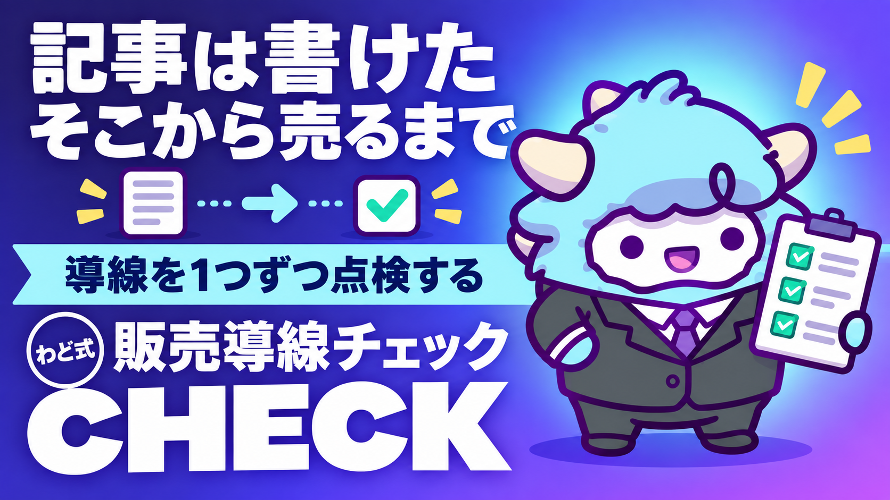

STEP2 note記事→販売導線 チェックシート
記事を書いた後、売れるまでの10チェック
このページが特典の本体です。下へスクロールして使ってくださいSTEP2 note記事→販売導線 チェックシート
note記事を書き終えたところで満足してしまう。わどが一番もったいないと感じる瞬間です。この特典では、記事を「書いた」から「売れた」まで運ぶための10個のチェックを、そのまま使えるシートで渡します。
はじめに
正直に言います。note記事は、書くこと自体はゴールではありません。あなたの記事を読んだ誰かが、次の一歩（LINE登録・商品購入・相談申込）を踏み出して、はじめて意味を持ちます。
でも実際には、多くの人が「記事を書く」で力を使い切ってしまいます。タイトルを決めて、本文を書いて、公開ボタンを押す。そこで止まる。誘導先が決まっていない、CTAが弱い、公開しただけで告知していない——こういう「導線の穴」は、記事の質とはまったく別の場所にあります。
この特典は、記事そのものの書き方ではなく、書いた記事を販売・成約につなげる10個のチェックポイントを扱います。すでに書いた記事があるなら、今すぐこのシートに当ててみてください。まだ1本も書いていないなら、次に書く記事から使えます。
この特典の進め方
- まず「最初のゴール（今日やる1つ）」だけをやってください。5分で終わります。
- 次に「テンプレ・シート全文」の10項目を、あなたの記事（または書く予定の記事）に当てはめてください。1項目1分もかかりません。
- 引っかかった項目があれば、対応する「手順」を読んで直します。全部直そうとせず、一番刺さった1〜2項目から着手してください。
- 迷ったら「判断に迷ったときの3問」に戻ります。
- 「よくある失敗」は先に読んでおくと、同じ穴を踏まずに済みます。
最初のゴール（今日やる1つ）
今日やることは1つだけです。
すでに公開しているnote記事を1本選び、その記事の最後の3行を読み返してください。
そこに「次に何をすればいいか」が書かれていなければ、それがこの特典で直す最初の穴です。読者は、記事を読み終えた瞬間が一番熱量が高い状態です。そこで何も指示しないのは、せっかく開いたドアを自分で閉めているのと同じです。
1. この工程で決めること
note記事から販売につなげる工程では、書く前に決めておくべきことが3つあります。
- 誘導先を1つに決める。LINE登録なのか、個別相談なのか、商品ページなのか。記事ごとに誘導先を変えると、読者は次に何をすればいいか分からず離脱します。まずは誘導先を1つに固定してください。
- その記事が「稼ぐ順番」のどこに当たるかを決める。最初の1件を取る段階の記事なのか、コンテンツ商品を売る段階の記事なのか。段階が混ざった記事は、誰にも刺さりません。
- 公開後にやることを先に決めておく。公開して終わりにせず、SNSでの告知・LINEでの案内まで含めて1セットだと決めておきます。
この3つは、記事を書き始める「前」に決める話です。書いてから決めようとすると、たいてい後回しになります。
2. 手順（1つずつ）
- 記事のゴールを1行で書く。「この記事を読んだ人に、最終的に何をしてほしいか」を1文にします。ここが曖昧だと、後の全部がぶれます。
- 見出し構成を先に作る。本文を書く前に、大見出し（h2）だけを並べます。目次は読者の地図になるので、ここで全体の流れが決まります。
- 本文を書く。語りかけの部分は「ですます」、体験を語る部分は「だ・である」を混ぜて、単調にならないようにします。
- 中盤に問いかけを1つ入れる。「ここまで読んで、心当たりはないでしょうか」のような一文で、読者を止めずに立ち止まらせます。
- 末尾のCTAを組み立てる。次の章のテンプレをそのまま使ってください。
- 見出し画像とハッシュタグを設定する。画像はSNSでシェアされたときの見え方も意識します。ハッシュタグは上限まで使い切ります。
- 公開する。
- 公開直後に、SNSで1回は必ず告知する。公開しただけでは誰にも届きません。
- 公開から数日たったら、記事の反応（読まれた数・反応の有無）を見て、次の1本の方向を決める。
この9ステップのうち、抜けやすいのは6・8・9です。ここを抜かさないための10チェックを、次の章に用意しました。
3. テンプレ・シート全文（10チェック）
書き終えた記事（または公開済みの記事）を、この表に当ててください。全部「はい」になっている必要はありません。まず「いいえ」がどこにあるかを知ることが目的です。
| No | チェック項目 | 確認する内容 | いいえの場合の直し方 |
|---|---|---|---|
| 1 | タイトルは検索と好奇心の両方を満たしているか | 検索されそうな言葉が入っているか。同時に「続きが気になる」要素があるか | 検索語1つ＋好奇心を生む言葉1つに絞って作り直す |
| 2 | 見出し画像はSNSでも見やすいか | シェアされたときに文字がつぶれないか。記事の内容が一目で伝わるか | 文字を大きく、要素を減らして作り直す |
| 3 | 見出し（目次）だけで話の流れが分かるか | 目次だけを読んで、記事の展開が想像できるか | 見出しを「結論寄り」の言葉に書き換える |
| 4 | 文体に緩急があるか | 全文が「ですます」または全文が「だ・である」になっていないか | 冒頭の宣言・転換点・キメの1文だけ「だ・である」に変える |
| 5 | 一次情報の匂いがあるか | 「私の場合」「実際にやってみたら」のような一文が最低1つあるか | 自分の体験を1エピソードだけ差し込む |
| 6 | 中盤に問いかけがあるか | 記事の折り返し地点付近に、読者に語りかける一文があるか | 「ここまで読んで、どう感じたでしょうか」のような一文を挿入する |
| 7 | 末尾のCTAが5ブロックそろっているか | 要約／次のステップ／誘導リンク／補足／署名の5つがあるか | 抜けているブロックだけを追記する |
| 8 | 誘導先は1つに絞られているか | LINE登録・相談申込などが1記事内で複数混在していないか | 一番優先したい誘導先だけ残す |
| 9 | ハッシュタグは上限まで設定されているか | 記事の内容に沿ったタグが複数ついているか | 関連語を追加してタグを増やす |
| 10 | 公開後の告知が予定されているか | 公開した瞬間に、どこで（どのSNS・どの配信）告知するかが決まっているか | 告知する場所と一言分の文面を先に用意しておく |
使い方のコツ: 10項目を上から順にではなく、まず1・7・8・10の4つだけ見てください。この4つは「読まれるか」「売れるか」に直結します。残りの6つは記事の質を底上げする項目です。
4. 判断に迷ったときの3問
チェックの途中で「これはどう直せばいいのか」と迷ったら、次の3つの問いに戻ってください。
- この記事は、誰の・どんな悩みに向けて書いたものか？ タイトルや見出しで迷ったら、この1文に立ち返ります。
- 読み終えた人に、次に何をしてほしいか？ CTAや誘導先で迷ったら、ここに戻ります。答えが2つ以上出てくるなら、記事のゴールがそもそも複数あります。
- この記事は「稼ぐ順番」のどの段階の読者に向けているか？ 最初の1件を探している人向けなのか、すでに動いている人にコンテンツ商品を届けたいのか。ここが曖昧なら、記事の構成そのものを見直します。
3問すべてに1文で答えられないうちは、公開を急がないでください。答えが決まった瞬間に、直すべき場所が自動的に絞られます。
5. 最新AI（2026年9月時点）での変わり目
2026年9月3日（米国時間）、OpenAIから新しい基盤モデルが発表されました（取得日 2026-09-06）。この特典に関わる範囲でいうと、変わり目は次の2つです。
- 画面を見て操作する力が上がった。文書やスプレッドシートの作成、途中で条件が変わっても対応する複雑な作業まで、人と同じ画面越しにこなせる方向に進んでいます（一次情報の裏取りが済んでいない部分もあるため、実際にできる範囲は自分の画面で確かめてください）。note記事の構成案づくりや見出し出しのような「対話しながら決めていく」作業は、この延長線上でさらにやりやすくなっていきます。
- 提供は段階的。同じ契約プランに入っていても、すぐに全員の画面に新機能が出るわけではありません。「使えるはずなのに出ない」ときは、環境の問題ではなく、まだ自分の順番が来ていないだけ、ということがあります。
この特典のチェックシート自体は、ツールが変わっても内容は変わりません。AI（ChatGPT／Gemini／Claude のどれでも）に見出し構成やCTA文の壁打ちを頼む、という使い方は今後も共通の型として使えます。より基礎的な環境の整え方は「Claude Code 最初の30分」、AIに任せる仕事そのものを増やしたい場合は「AI社員1人目」の特典をあわせて見てください。
6. 次の一手
この特典は、「稼ぎ方より、稼ぐ順番」でいうSTEP2（コンテンツ商品を形にして届ける段階）に当たります。最初の1件がまだの方はSTEP1から、note記事はもう複数本書いていて配信・SNSの型を強めたい方はSTEP3から使うほうが合っています。
自分がどの段階にいるかが分からない、あるいは「このチェックをやったのに反応が薄い」というときは、面談で、あなた専用の1枚（特注のロードマップ）を一緒に作ります。
最初に投げるプロンプト
記事を書く前、または書いた直後に、AI（ChatGPT／Gemini／Claude のどれでも）にそのままコピーして貼ってください。
あなたはnote記事の編集者です。
これから見せる記事（または構成案）を、以下の観点だけで診断してください。
【診断してほしいこと】
1. タイトルは「検索されそうな言葉」と「続きが気になる要素」の両方を含んでいるか
2. 見出し（目次）だけを読んで、記事の展開が想像できるか
3. 文体は「ですます」と「だ・である」の緩急があるか、それとも単調か
4. 一次情報（書き手自身の体験）が入っているか
5. 記事の最後に、読者が次に何をすればいいかが明確に書かれているか
【出力形式】
- 5項目それぞれに「OK」または「要修正」を付ける
- 「要修正」の項目には、直すための具体的な一文案を1つ添える
- 最後に、5項目のうち最優先で直すべきものを1つだけ挙げる
記事（または構成案）:
[ここに記事本文または見出し構成を貼る]
よくある失敗 7つと直し方
- タイトルだけ強くして、中身が追いつかない。読者が「期待外れ」で離脱します。→ タイトルは「中身で言えること」の範囲に収める。
- 誘導先を記事ごとに変えてしまう。読者が混乱し、行動が分散します。→ 直近1〜2か月は誘導先を1つに固定する。
- 公開して終わり、告知をしない。フォロワーの多くは公開に気づきません。→ 公開直後にSNSで1回、数日後にもう1回触れる。
- CTAが最後の1行だけ。読者の熱量が冷めた状態で誘導しても動きません。→ 5ブロック構成（要約→次のステップ→誘導リンク→補足→署名）に組み直す。
- 全文が「ですます」で単調になる。読み流されて記憶に残りません。→ 冒頭・転換点・キメの1文だけ「だ・である」にする。
- 見出し画像を後回しにする。SNSでシェアされたときに見劣りし、クリックされません。→ 本文を書き終える前に画像だけ先に用意する。
- 反応を見ずに次を書いてしまう。同じ穴を繰り返します。→ 1本ごとに、この10チェックのうち何番が「いいえ」だったかを記録しておく。
安全に使うための注意
- この特典で扱う「反応」「成果」は、記事ごとの傾向を見るためのものです。同じ結果を保証するものではありません。
- 記事に体験談を書くときは、関わった相手が特定できる書き方を避けてください。匿名化しても、状況の組み合わせで特定できる場合があります。
- CTAで誘導する先は、あなた自身が管理している窓口（自分のLINE・自分の申込フォームなど）に限定してください。
- 成果を断定する言い切りや、同じ結果を約束するような書き方は、note・SNSどちらの規約上もリスクがあります。使わないでください。
つまずいたときに聞くプロンプト
10チェックのどこかで手が止まったら、次のプロンプトをAIに投げてください。
あなたはnote記事の編集アドバイザーです。
わたしは今、note記事を「書いた後、売れるまでの10チェック」の途中でつまずいています。
つまずいている項目: [1〜10の番号、または内容を書く]
記事の状況: [公開済み／下書き／構成案のみ、のいずれか]
悩んでいること: [具体的に何が決まらないか]
以下を教えてください。
1. なぜこの項目でつまずきやすいのか、構造的な理由
2. 今日中にできる、一番小さい一歩
3. その一歩をやったあとに、次に見るべき項目
用語集
- CTA: Call To Action。記事の読者に次の行動（登録・購入・申込など）を促す部分のこと。
- 誘導先: 記事を読んだ人に案内する、次の窓口（LINE登録・個別相談・商品ページなど）。
- 一次情報: 自分自身が体験したこと・実際にやってみた結果のこと。
- 稼ぐ順番（STEP1〜3）: 最初の1件を取る段階（STEP1）→ コンテンツ商品を形にする段階（STEP2）→ SNS・配信で広げる段階（STEP3）という、成果を積み上げる順番の考え方。
- フリーミアム設計: 記事の一部を無料で公開し、続きや詳細を有料・登録制にする構成のこと。
出す前の品質チェック（10項目）
公開ボタンを押す直前、最後にこの10行だけを上から読んでください。全部にチェックがついたら公開してください。
- [ ] タイトルに検索語と好奇心ギャップの両方が入っている
- [ ] 見出し画像がSNSでも見やすい
- [ ] 見出し（目次）だけで展開が分かる
- [ ] 文体に緩急がある（全文ですます・全文だ/である になっていない)
- [ ] 一次情報の一文が最低1つある
- [ ] 中盤に問いかけの一文がある
- [ ] 末尾CTAが5ブロックそろっている
- [ ] 誘導先が1つに絞られている
- [ ] ハッシュタグを上限まで設定した
- [ ] 公開後の告知タイミングと文面を先に決めてある
最終チェックリスト
- [ ] すでに公開している記事を1本選び、10チェックに当てた
- [ ] 「いいえ」だった項目のうち、最低1つを直した
- [ ] 誘導先を1つに固定した
- [ ] 記事のゴールを1行で言い切れる状態にした
- [ ] 公開後にSNSで告知する予定（場所・タイミング）を決めた
- [ ] 次に書く記事が「稼ぐ順番」のどの段階向けかを決めた